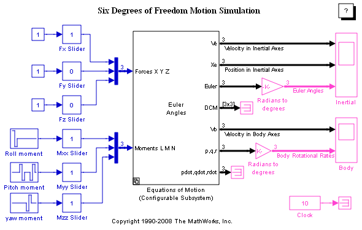
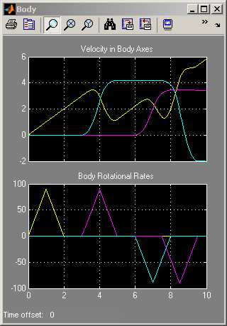
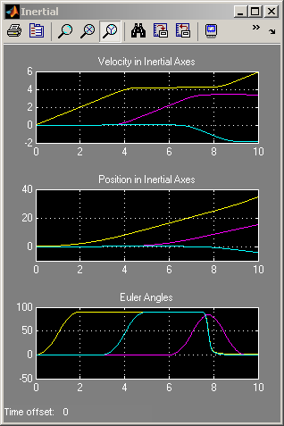
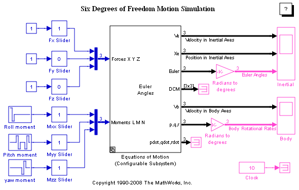
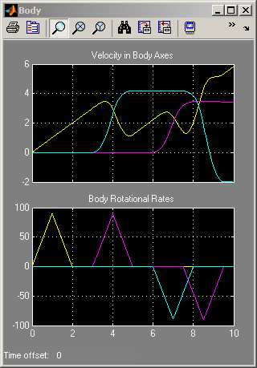
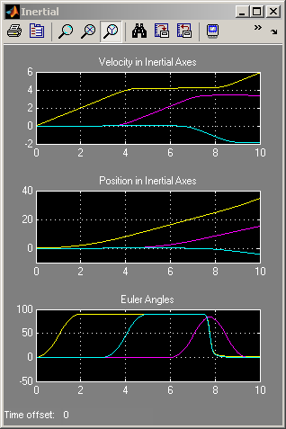

6 自由度 (6-DoF) のモーション プラットフォーム
このデモでは、Simulink® で 6 自由度の動きをモデル化する方法を示します。 Configurable Subsystem の右クリック メニューにある [ブロック選択] 項目には、運動方程式をモデル化するためにオイラー角と四元数の使用を切り替えるオプションがあります。
  このデモでは、Simulink® で 6 自由度の動きをモデル化する方法を示します。 Configurable Subsystem の右クリック メニューにある [ブロック選択] 項目には、運動方程式をモデル化するためにオイラー角と四元数の使用を切り替えるオプションがあります。
  